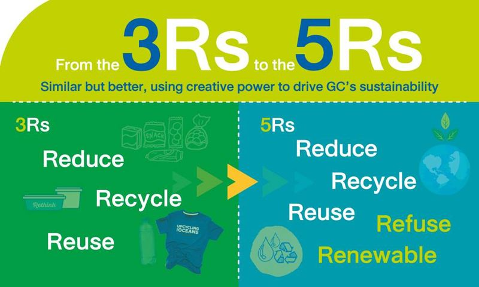
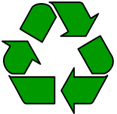
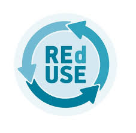
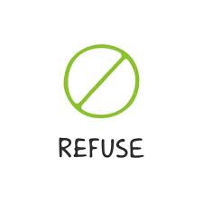
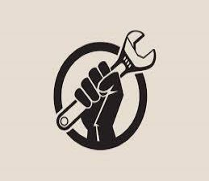

What are 5R's ?
You’ve probably heard of the three Rs: reduce, reuse, and recycle. These terms were first popularized in the late-1970s, following the Resource Conservation and Recovery Act. The idea was simple: Give the public a motto for reducing waste to curb North Americans’ seemingly unstoppable proclivity for making trash and to aid governments’ abilities to manage it.
We use the 5 R's. They stand for Reduce, Reuse, Recycle, Repurpose and Refuse. These are used in waste
management. The Five Rs give us a new framework for dealing with waste in our lives, in part by helping us
acknowledge the habits that lead to more waste and more trash.
Despite our familiarity with the three Rs, and the fact that “zero waste” trends seem to be advancing at lightning speed, waste is still a huge problem around the world, and one that continues to grow exponentially.
In 2013, Bea Johnson gave the world the Five Rs in her book Zero Waste Home: The Ultimate Guide to Simplifying Your Life by Reducing Your Waste. They are: Refuse, Reduce, Reuse, Recycle and Repurpose. The Five Rs give us a new framework for dealing with waste in our lives, in part by helping us acknowledge the habits that lead to more waste and more trash.

   